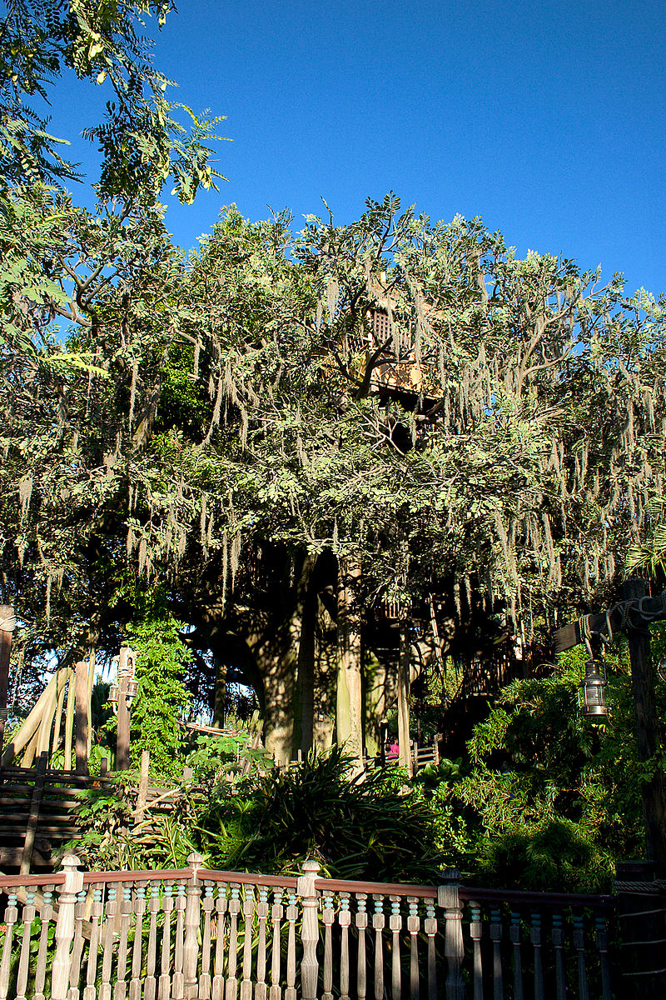
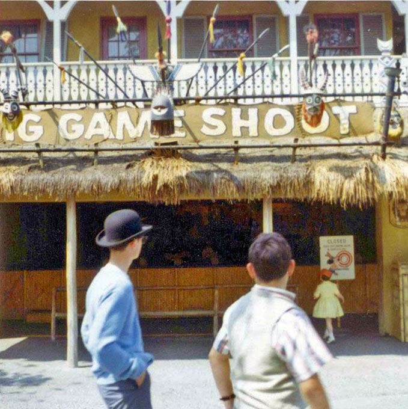
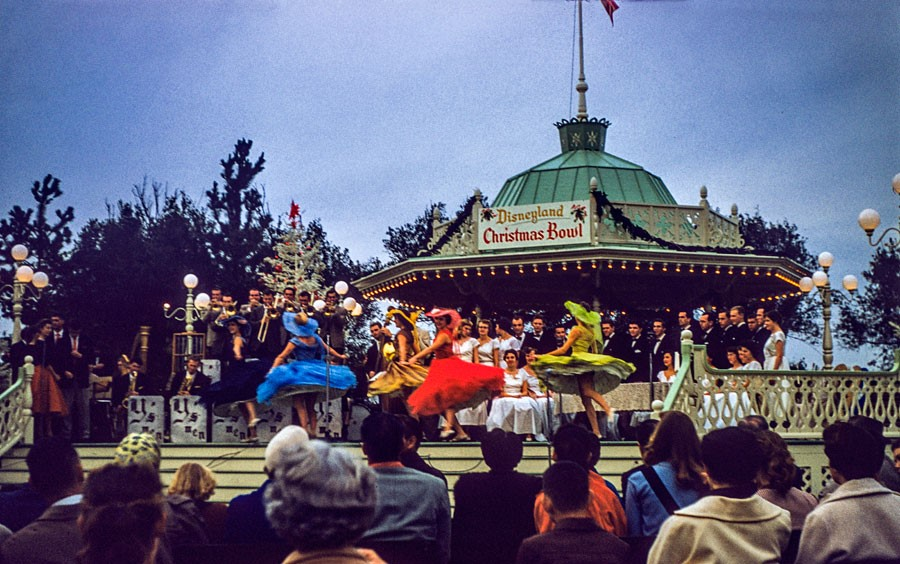
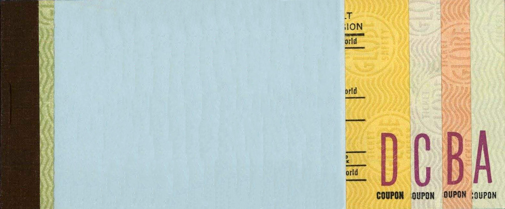

Magnola Park was born from a lack of desginated space for the band in Disneyland. Originally located in Town Square, shortly before the park was opened, it was realized that this large structure would block the view of the Castle and disrupt the cinematic “long shot” desired looking down Main Street. Its next residence was near the castle, where it resided until Walt decided that the Disneyland Band needed a more permanent stage.
Sadly the bandstand gazebo closed in 1962. When the Jungle Cruise expanded in 1962, the addition of the Elephant Bathing Pool meant that the Bandstand had reached the end of the line at Disneyland.
According to the Nickel Tour, the Bandstand was donated to the City of Anaheim, who kept it for a few years. It now rests at the Rogers Gardens in Corona del Mar.
The Swiss Family Treehouse opened November 18, 1962, in Adventureland at Disneyland, two years after the Disney film Swiss Family Robinson. Disney animator Wolfgang Reitherman, who designed the treehouse for the movie, contributed. At 70 feet tall and 80 ft wide, constructed of concrete and reinforced steel, the attraction weighed 150 tons.[3] The tree species was humorously dubbed "Disneyodendron semperflorens grandis -- large, everblooming Disney tree." When it opened, the attraction required a C ticket.[9] The attraction originally opened with reddish brown leaves. However, the red leaves faded very easily in the sun and were eventually switched to green leaves sometime during the early 1960s.
In March 1999, the original attraction at Disneyland was closed. Refurbished and remodeled on a new theme, it reopened in June the same year as Tarzan's Treehouse.
The Big Game Safari Shooting Gallery opened in April of 1955. Based on tradtional shooting gallery games, this one featured jungle animals and birds, all themed to Disney, and more specfically Adventureland. This ride was dubbed the "perpetual paint job" as a few men were responsible each day for keeping the gallery freshly painted, using eleven very specfic colors of paint.
However, by January of 1982, the last pellet gun would empty its round, and the Big Game Shooting Gallery would no longer appear on ticket coupons, in souvenir guides, or on maps. The pellet rifles had become a libility for Disneyland. A few years later, the remaining shooting gallery rides would transition over light guns, which are still used today.